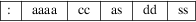

srec_signetics - Signetics file format
The Signetics file format is not often used. The major disadvantage in modern applications is that the addressing range is limited to only 64kb.
Records
All data lines are called records, and each record contains
the following 5 fields:

The field are defined as follows:
|
: |
Every record starts with this identifier. | ||
|
aaaa |
The address field. A four digit (2 byte) number representing the first address to be used by this record. | ||
|
cc |
The byte-count. A two digit value (1 byte), counting the actual data bytes in the record. | ||
|
as |
Address checksum. Covers 2 address bytes and the byte count. | ||
|
dd |
The actual data of this record. There can be 1 to 255 data bytes per record (see cc) | ||
|
ss |
Data Checksum. Covers only all the data bytes of this record. |
Record
Begin
Every record begins with a colon “:[rq] character.
Records contain only ASCII characters. No spaces or tabs are
allowed in a record. In fact, apart from the 1st colon, no
other characters than 0..9 and A..F are allowed in a record.
Interpretation of a record should be case less, it does not
matter if you use a..f or A..F.
Unfortunately the colon was chosen for the Signetics file format, similar to the Intel format (see srec_intel(5) for more information). However, SRecord is able to automatically detect the dofference between the two format, when you use the -Guess format specifier.
Address
Field
This is the address where the first data byte of the record
should be stored. After storing that data byte, the address
is incremented by 1 to point to the address for the next
data byte of the record. And so on, until all data bytes are
stored. The address is represented by a 4 digit hex number
(2 bytes), with the MSD first. The order of addresses in the
records of a file is not important. The file may also
contain address gaps, to skip a portion of unused
memory.
Byte
Count
The byte count cc counts the actual data bytes in the
current record. Usually records have 32 data bytes, but any
number between 1 and 255 is possible.
A value of 0x00 for cc indicates the end of the file. In this case not even the address checksum will follow! The record (and file) are terminated immediately.
It is not recommended to send too many data bytes in a record for that may increase the transmission time in case of errors. Also avoid sending only a few data bytes per record, because the address overhead will be too heavy in comparison to the payload.
Address
Checksum
This is not really a checksum anymore, it looks more like a
CRC. The checksum can not only detect errors in the values
of the bytes, but also bytes out of order can be
detected.
The checksum is calculated by this algorithm:
checksum = 0
for i = 1 to 3
checksum = checkum XOR byte
ROL checksum
next i
For the Address Checksum we only need 2 Address bytes and 1 Byte Count byte to be added. That’s why we count to 3 in the loop. Every byte is XORed with the previous result. Then the intermediate result is rolled left (carry rolls back into b0).
This results in a very reliable checksum, and that for only 3 bytes!
The last record of the file does not contain any checksums! So the file ends right after the Byte Count of 0.
Data
Field
The payload of the record is formed by the Data field. The
number of data bytes expected is given by the Byte Count
field. The last record of the file may not contain a Data
field.
Data
Checksum
This checksum uses the same algorithm as used for the
Address Checksum. This time we calculate the checksum with
only the data bytes of this record.
checksum = 0
for i = 1 to cc
checksum = checksum XOR byte
ROL checksum
next i
Note that we count to the Byte Count cc this time.
Size
Multiplier
In general, binary data will expand in sized by
approximately 2.4 times when represented with this
format.
Here is an example Signetics file
:B00010A5576F77212044696420796F75207265617B
:B01010E56C6C7920676F207468726F756768206136
:B02010256C6C20746861742074726F75626C652068
:B0300D5F746F207265616420746869733FD1
:B03D00
In the example above you can see a piece of code in Signetics format. The first 3 lines have 16 bytes of data each, which can be seen by the byte count. The 4th line has only 13 bytes, because the program is at it’s end there.
Notice that the last record of the file contains no data bytes, and not even an Address Checksum.
http://sbprojects.fol.nl/knowledge/fileformats/signetics.htm
This man page was taken from the above Web page. It was written by San Bergmans <sanmail@bigfoot.com>